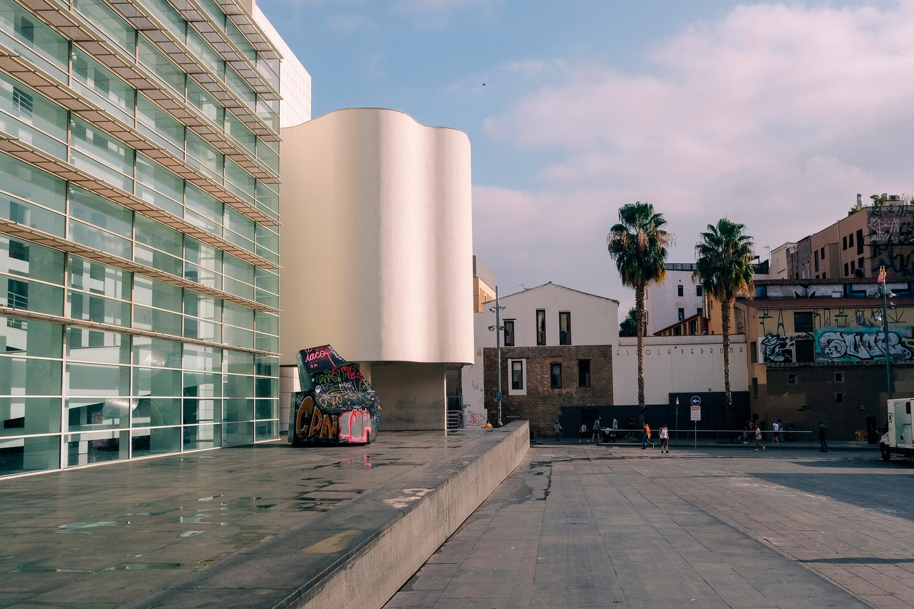
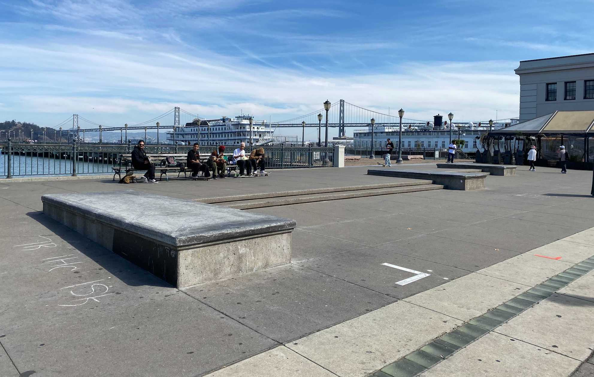
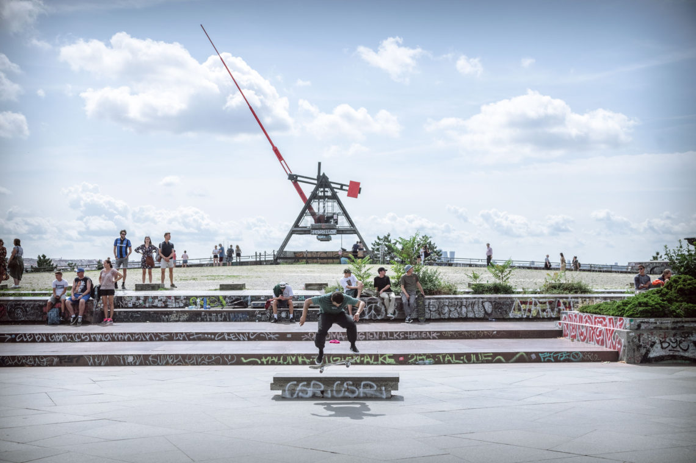

Como muchos ya sabéis o habréis escuchado de un amigo, el MACBA es «el lugar para practicar skate en Barcelona«. Justo en frente del Museu d’Art Contemporani de Barcelona, también conocido como MACBA, se encuentra el punto de encuentro para los skaters y la escena del skate en Barcelona y tal vez en el mundo. Incluso Wikipedia lo nombra como uno de los «lugares más conocidos y respetados para el skateboard moderno». La atmósfera del mundo del skate en el MACBA no tiene parecido con ninguna otra en el mundo, al menos en cualquier lugar en el que haya estado. Básicamente puedes pasar allí todo el día, solo hablando con la gente, probando nuevos trucos o lo que sea.
Macba
Situado en Barcelona es considerado la meca del skateboarding.
Pier 7
El spot más emblemático de San Francisco
Le Dome, Paris

Situado en París es uno de los destinos asegurados en el país galo
Stalin Plaza
Mi lugar favorito de la República Checa